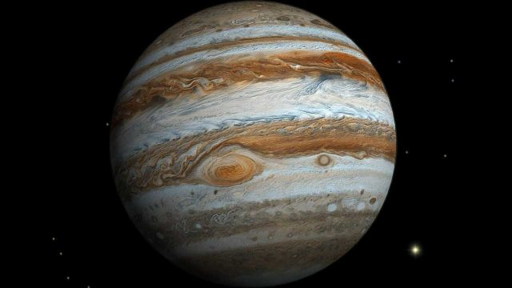

Jupiter

- The Jupiter
-
Jupiter is the fifth planet from our Sun and is, by far, the largest planet in the solar system,
more than twice as massive as all the other planets combined.
-
Jupiter's stripes and swirls are actually cold, windy clouds of ammonia and water, floating in an atmosphere of hydrogen and helium.
Jupiter's iconic Great Red Spot is a giant storm bigger than Earth that has raged for hundreds of years.
-
Jupiter's environment is probably not conducive to life as we know it. The temperatures, pressures,
and materials that characterize this planet are most likely too extreme and volatile for organisms to adapt to.
-
Jupiter, being the biggest planet, gets its name from the king of the ancient Roman gods.
- Planet Type
- Jupiter is a Jovian planet also known as gas giant.
- Moons
- Jupiter has between 80 and 95 moons
- Orbital Period
- 12 Earth years (4,333 Earth days).
- Rotation
- One day on Jupiter takes only about 10 hours
- Diameter
- about 88,695 miles (142,800 kilometers)
- Mass
- 1,898.13 x 1024 kilograms
- Volume
- Composition
-
The composition of Jupiter is similar to that of the Sun – mostly hydrogen and helium.
Deep in the atmosphere, pressure and temperature increase, compressing the hydrogen gas into a liquid.
-
The interior of Jupiter contains denser materials—by mass it is roughly 71% hydrogen, 24% helium, and 5% other elements.
- Temperature
- Facts
- It is the biggest planet in our Solar System
- Jupiter has rings, but they are too faint to see very well
- Jupiter has 80 moons
- Jupiter is a Gas Giant
- A day on Jupiter is super fast
- There are clouds on Jupiter
- You can see Jupiter in the night sky
- References